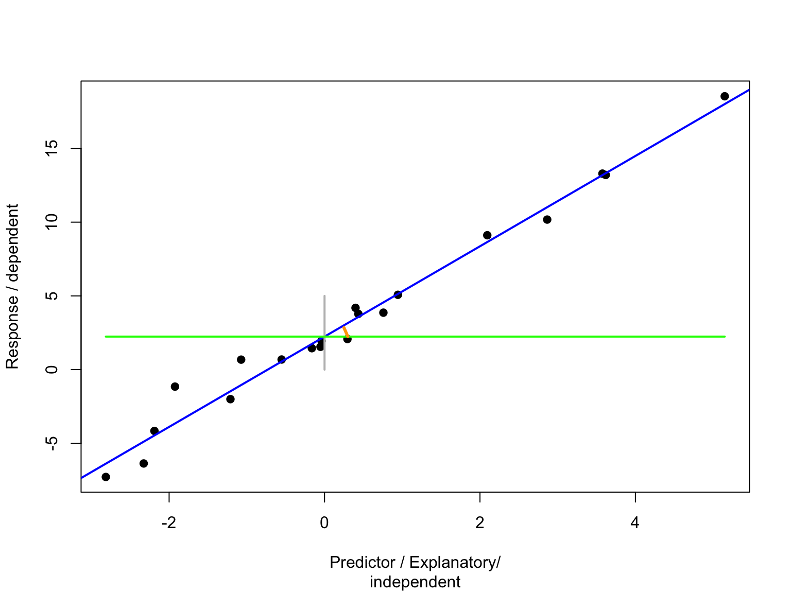

A closer look: Mixed-effects models
Radchuk Viktoriia
2022-12-23
Random intercept models
What is intercept?
\(y = \alpha + \beta\times x + \epsilon\), \(\epsilon \sim N(0, \sigma^2)\)
\(\alpha\) is intercept, i.e. the value of the response variable when the predictor = 0,
\(\beta\) is slope, i.e. by how much the response variable is increasing per each unit of the predictor 
Random intercept models: math
Let us consider a LMM with:
one random factor that has \(q\) levels,
\(n\) observations, and
\(p\) explanatory fixed variables (in \(\mathbf{X}\))
\(\mathbf{Y} = \mathbf{X} \beta + \mathbf{Z}b + \epsilon\)
These matrices stand for:
\[ \begin{bmatrix} y_1 \\ y_2 \\ y_3 \\ \vdots \\ y_n \end{bmatrix} = \begin{bmatrix} 1 & x_{1,1} & x_{1,2} & \dots & x_{1,p} \\ 1 & x_{2,1} & x_{2,2} & \dots & x_{2,p} \\ 1 & x_{3,1} & x_{3,2} & \dots & x_{3,p} \\ \vdots & \vdots & \vdots & \ddots & \vdots \\ 1 & x_{n,1} & x_{n,2} & \dots & x_{n,p} \end{bmatrix} \begin{bmatrix} \beta_0 \\ \beta_1 \\ \beta_2 \\ \vdots \\ \beta_p \end{bmatrix}+ \begin{bmatrix} z_{1,1} & z_{1,2} & z_{1,3} & \dots & z_{1,q} \\ z_{2,1} & z_{2,2} & z_{2,3} & \dots & z_{2,q} \\ z_{3,1} & z_{3,2} & z_{3,3} & \dots & z_{3,q} \\ \vdots & \vdots & \vdots & \ddots & \vdots \\ z_{n,1} & z_{n,2} & z_{n,3} & \dots & z_{n,q} \\ \end{bmatrix} \begin{bmatrix} b_1 \\ b_2 \\ b_3 \\ \vdots \\ b_q \end{bmatrix}+ \begin{bmatrix} \epsilon_1 \\ \epsilon_2 \\ \epsilon_3 \\ \vdots \\ \epsilon_n \end{bmatrix} \]
Random intercept models: math
often
\(b \sim N(0, \mathbf{D})\), \(\epsilon \sim N(0, \mathbf{\sum})\)
Or, in more detail:
\[ b \sim N\left(0, \begin{bmatrix} \lambda & 0 & 0 & \dots & 0 \\ 0 & \lambda & 0 & \dots & 0 \\ 0 & 0 & \lambda & \dots & 0 \\ \vdots & \vdots & \vdots & \ddots & \vdots \\ 0 & 0 & 0 & \dots & \lambda \\ \end{bmatrix}\right) \text{& } \epsilon \sim N\left(0, \begin{bmatrix} \phi & 0 & 0 & \dots & 0 \\ 0 & \phi & 0 & \dots & 0 \\ 0 & 0 & \phi & \dots & 0 \\ \vdots & \vdots & \vdots & \ddots & \vdots \\ 0 & 0 & 0 & \dots & \phi \end{bmatrix}\right) \]where \(\lambda\) and \(\phi\) are, respectively, variances of a random effect and of residuals.
In the random intercept model the relations between predictor(s) and the response are the same across all levels of the random effect variable
Example
Let us recall the example from the exercise:
Q: assess the relation between phenology and temperature across
species.
- 6 species, i.e. \(q =
6\) (the number of levels of the random factors, or number of
groups / IDs);
- 120 datapoints, i.e. \(n
= 120\) (we simplify and assume there is 20 data points per each
species, but generally it is not required to have same number of
observations per level)
- 1 fixed explanatory continuous variable, i.e. \(p = 1\) (temperature)
Let us consider an example with:
Our simulated data
set.seed(5)
Weight_sim <- SimulateMix(intercept = 0.1, slope = -0.4, n = 120,
group.nb = 6, var.group = 0.1,
var.error = 0.05, times.perGroup = 20)
Weight_sim[c(1:5, 21:25), ]## intercept slope x group b error y
## 1 0.1 -0.4 -1.6817110 group_1 0.3702573 -0.08945021 1.0534915
## 7 0.1 -0.4 -0.9443328 group_1 0.3702573 -0.27748499 0.5705054
## 13 0.1 -0.4 -2.1607852 group_1 0.3702573 0.14506324 1.4796346
## 19 0.1 -0.4 0.4816345 group_1 0.3702573 -0.06821095 0.2093926
## 25 0.1 -0.4 1.6380179 group_1 0.3702573 0.21155183 0.0266020
## 2 0.1 -0.4 2.7687187 group_2 0.2798125 0.27796467 -0.4497103
## 8 0.1 -0.4 -1.2707426 group_2 0.2798125 -0.02326386 0.8648457
## 14 0.1 -0.4 -0.3150687 group_2 0.2798125 0.06689472 0.5727347
## 20 0.1 -0.4 -0.5187108 group_2 0.2798125 -0.09355783 0.4937390
## 26 0.1 -0.4 -0.5869637 group_2 0.2798125 0.16810108 0.7826991We simulated the data assuming 6 species (groups more generally), with 20 data points per species, a negative relation between temperature and weight, and some variation around the random intercept.
Plot the data
predictor, i.e. temperature

Plot the data
response, i.e. phenology

Plot the data
relation between the predictor and response per level of random effect

Fit the random-intercept model
We will have a look at the syntax of several different R libraries
that allow fitting mixed-effects models.
Let us start with using the lme4 package and a function
lmer().
We specify the random effect with the syntax (1|group).
Interpreting model output
## Linear mixed model fit by maximum likelihood ['lmerMod']
## Formula: y ~ x + (1 | group)
## Data: Weight_sim
##
## AIC BIC logLik deviance df.resid
## 15.4 26.6 -3.7 7.4 116
##
## Scaled residuals:
## Min 1Q Median 3Q Max
## -3.6938 -0.5642 -0.0861 0.6851 2.4374
##
## Random effects:
## Groups Name Variance Std.Dev.
## group (Intercept) 0.12976 0.3602
## Residual 0.05113 0.2261
## Number of obs: 120, groups: group, 6
##
## Fixed effects:
## Estimate Std. Error t value
## (Intercept) 0.12775 0.14851 0.86
## x -0.39026 0.01088 -35.87
##
## Correlation of Fixed Effects:
## (Intr)
## x -0.005- We see information on AIC, BIC, Log Likelihood, df.
Why do we have 116 degrees of
freedom?
- Random effects shows the estimated parameters for random effects. The variance of the random intercept \(\lambda\) is estimated at \(\lambda = 0.3602^2 = 0.1297\)
Interpreting model output
## Linear mixed model fit by maximum likelihood ['lmerMod']
## Formula: y ~ x + (1 | group)
## Data: Weight_sim
##
## AIC BIC logLik deviance df.resid
## 15.4 26.6 -3.7 7.4 116
##
## Scaled residuals:
## Min 1Q Median 3Q Max
## -3.6938 -0.5642 -0.0861 0.6851 2.4374
##
## Random effects:
## Groups Name Variance Std.Dev.
## group (Intercept) 0.12976 0.3602
## Residual 0.05113 0.2261
## Number of obs: 120, groups: group, 6
##
## Fixed effects:
## Estimate Std. Error t value
## (Intercept) 0.12775 0.14851 0.86
## x -0.39026 0.01088 -35.87
##
## Correlation of Fixed Effects:
## (Intr)
## x -0.005- Residual variance is estimated at
\(\phi = 0.2261^2 = 0.0511\)
- Fixed effects shows the estimates of the fixed effects parameters (as well as their SError), just as in the regular linear model.
Compare estimated and simulated parameters
c(coef_lmer <- as.numeric(fixef(mod_randi)[1]), as.numeric(fixef(mod_randi)[2]),
var_group_lmer <- as.numeric(attr(VarCorr(mod_randi)$group, "stddev")^2),
var_error_lmer <- as.numeric(attr(VarCorr(mod_randi), "sc")^2))## [1] 0.1277485 -0.3902584 0.1297634 0.0511348We used
- intercept = 0.1,
- slope = -0.4,
- var.group = 0.1,
- var.error = 0.05.
- What does
fixef()does?
- And what does
ranef()does?
Fixed-effects estimates: fixef()
fixef() extracts the fixed-effects estimates. So, in our
case these are the estimates of the intercept and the slope of phenology
on temperature. If we had categorical predictor, the estimates would be
the difference of each level of that categorical predictor with the one
that is taken as reference, i.e. intercept (this is the way R usually
fits models)
## (Intercept) x
## 0.1277485 -0.3902584BLUP: ranef()
ranef() returns conditional modes of the random effects.
These are also known (in case of linear models) as Best Linear
Unbiased Predictors (BLUPs). They show the difference between
the (population-level) average predicted response for a given
fixed-effect value and the response predicted for a particular level of
the random factor (i.e. individual/group/species). You can think of
these as the group-level effects, i.e. how much does any group/species
differ from the mean population value?
## $group
## (Intercept)
## group_1 0.36822280
## group_2 0.30110155
## group_3 -0.44228195
## group_4 -0.52420228
## group_5 0.25519340
## group_6 0.04196648
##
## with conditional variances for "group"Non-independence of the data
What is the correlation between the observations taken for the same species and for those from different species?

Non-independence of the data
\(\mathbf{Y}_{i} = \mathbf{X}_{i} \beta +
\mathbf{Z}_{i}b_i + \epsilon_i\)
To derive the expression of the covariance matrix, this can be written
as
\(\mathbf{Y} \sim N(\mathbf{X} \beta,
\mathbf{V}_{i})\)
where \(\mathbf{V_{\mathit{i}}} =
\mathbf{Z}_{i} \times \mathbf{D}_{i} \times \mathbf{Z'}_{i} +
\mathbf{\sum}_{i}\)
recall that
\(b \sim N(0, \mathbf{D})\),
\(\epsilon \sim N(0,
\mathbf{\sum})\)
so, \(\mathbf{D}_{i}\) is the covariance matrix of the random effects. That means that including random effects has impact on the covariance matrix \(\mathbf{V}_{i}\).
Intraclass Correlation Coefficient
Looking at the covariance matrix for a single species
\[ \mathbf{V}_{i} = \begin{bmatrix} \lambda + \phi & \lambda & \lambda & \dots & \lambda \\ \lambda & \lambda + \phi & \lambda & \dots & \lambda \\ \lambda & \lambda & \lambda + \phi & \dots & \lambda \\ \vdots & \vdots & \vdots & \ddots & \vdots \\ \lambda & \lambda & \lambda & \dots & \lambda + \phi \\ \end{bmatrix} \]
This shows that the covariance between any two data points for the
same species is \(\lambda\) and the
variance is \(\lambda + \phi\)
By definition, the correlation between two observations coming from the
same species is: \(\lambda / (\lambda +
\phi)\)
This is called intra-class correlation (ICC).
Calculate ICC for our example
## Linear mixed model fit by maximum likelihood ['lmerMod']
## Formula: y ~ x + (1 | group)
## Data: Weight_sim
##
## AIC BIC logLik deviance df.resid
## 15.4 26.6 -3.7 7.4 116
##
## Scaled residuals:
## Min 1Q Median 3Q Max
## -3.6938 -0.5642 -0.0861 0.6851 2.4374
##
## Random effects:
## Groups Name Variance Std.Dev.
## group (Intercept) 0.12976 0.3602
## Residual 0.05113 0.2261
## Number of obs: 120, groups: group, 6
##
## Fixed effects:
## Estimate Std. Error t value
## (Intercept) 0.12775 0.14851 0.86
## x -0.39026 0.01088 -35.87
##
## Correlation of Fixed Effects:
## (Intr)
## x -0.005var_group_lmer <- as.numeric(attr(VarCorr(mod_randi)$group, "stddev")^2)
var_error_lmer <- as.numeric(attr(VarCorr(mod_randi), "sc")^2)
ICC <- var_group_lmer / (var_group_lmer + var_error_lmer)So, the Intra-class correlation is 0.7173283
Implications of ICC
- Intra-class correlation for our data is 0.72
- It means that our sample size is not 120 and
actually, should be corrected to effective sample size (\(N_{effective}\))
To do that, we need the ICC = 0.72, and \(\mathit{l}\) (number of samples per individual) = 20.
- We calculate:
- design effect as \(desEffect = 1 + (\mathit{l} -1) \times ICC = 1 +
19 \times 0.72 = 14.68\)
- effective sample size as \(N_{effective} = (q \times l) / desEffect = 6
\times 20 / 14.68 = 8.2\)
- design effect as \(desEffect = 1 + (\mathit{l} -1) \times ICC = 1 +
19 \times 0.72 = 14.68\)
- So, high ICC implies that the corrected sample size
is much smaller, meaning less precise standard errors.
Attention: this formula for the design effect is only applicable when the number of data points per level of random effect is equal, as here!
Plot predictions
We use function predict() to get the predictions to a
new data. So, first create the data.
new.dat <- expand.grid('group' = unique(Weight_sim$group),
x = seq(from = min(Weight_sim$x), to =
max(Weight_sim$x), length.out = 20))
new.dat[1:9, ]## group x
## 1 group_1 -4.367934
## 2 group_2 -4.367934
## 3 group_3 -4.367934
## 4 group_4 -4.367934
## 5 group_5 -4.367934
## 6 group_6 -4.367934
## 7 group_1 -3.864343
## 8 group_2 -3.864343
## 9 group_3 -3.864343Plot predictions
new.dat$pred_fix <- predict(mod_randi, newdata = new.dat, re.form = ~ 0)
new.dat$pred <- predict(mod_randi, newdata = new.dat, re.form = NULL)
ggplot(data = new.dat, aes(x = x, y = pred, group = group, col = group)) +
geom_line(lty = 3, linewidth = 2) + theme_bw() +
geom_line(data = new.dat, aes(x = x, y = pred_fix), col = 'black') +
xlab('Standardized temperature') + ylab('Standardized morphology')
Option “re.form =” says whether to include random effect (if “re.form = NULL”) or to only predict using the fixed effect(s).
Best Linear Unbiased Predictors
new.dat$pred_ranE <- predict(mod_randi, newdata = new.dat, re.form = NULL, random.only = TRUE)
randEF <- as.data.frame(ranef(mod_randi)) %>%
rename(group = grp)
ggplot(data = new.dat, aes(x = x, y = pred_ranE, group = group, col = group)) +
geom_line(lty = 3, linewidth = 2) + theme_bw() +
geom_line(data = new.dat, aes(x = x, y = pred_fix), col = 'black') +
geom_point(data = randEF, aes(x = 0, y = condval, col = group), pch = 20, size = 7) +
xlab('Standardized temperature') + ylab('Standardized phenology')
Plot variance around predictions
What type of variance?
- Variance (uncertainty) around fixed effect
estimate;
- Variance due to random effect, i.e. variation among
the species;
- Residual variance.
Plot variance around predictions
We use the predictInterval() function from the
merTools package to predict the CI around each predicted
value.
CI_full <- predictInterval(mod_randi, newdata=new.dat, level = 0.95) # by default uncertainty due to fixed effects, random eff and the residual variance
CI_fix <- predictInterval(mod_randi, newdata = new.dat, level = 0.95, which = 'fixed', include.resid.var = FALSE) # uncertainty in fixed effects
CI_fix <- CI_fix %>%
rename(upr_Fix = upr, lwr_Fix = lwr) %>%
dplyr::select(., !fit)
new.dat <- cbind(new.dat, CI_full, CI_fix)
head(new.dat)## group x pred_fix pred pred_ranE fit upr lwr
## 1 group_1 -4.367934 1.832371 2.200594 0.36822280 2.222572 2.755213 1.6963221
## 2 group_2 -4.367934 1.832371 2.133473 0.30110155 2.121568 2.709249 1.5627826
## 3 group_3 -4.367934 1.832371 1.390089 -0.44228195 1.403792 1.908848 0.8611924
## 4 group_4 -4.367934 1.832371 1.308169 -0.52420228 1.327565 1.867558 0.7227318
## 5 group_5 -4.367934 1.832371 2.087565 0.25519340 2.079891 2.675442 1.5585650
## 6 group_6 -4.367934 1.832371 1.874338 0.04196648 1.880409 2.430649 1.3316747
## upr_Fix lwr_Fix
## 1 2.132536 1.521855
## 2 2.132536 1.521855
## 3 2.132536 1.521855
## 4 2.132536 1.521855
## 5 2.132536 1.521855
## 6 2.132536 1.521855Plot variance: per level of random effect
ggplot(data = new.dat, aes(x = x, y = pred_fix, group = group)) +
theme_bw() +
geom_ribbon(data = new.dat, aes(x = x, ymin = lwr, ymax = upr, fill = group), alpha = 0.3) +
geom_ribbon(data = new.dat, aes(x = x, ymin = lwr_Fix, ymax = upr_Fix), fill = 'blue', alpha = 0.3) +
geom_line(lty = 3) +
xlab('Standardized temperature') + ylab('Standardized phenology')
Plot variance
predicted() vs fitted()
Fitted values obtained with fitted() are model estimates
for existing observations. Predicted values obtained with
predicted() are model estimates for new observations (you
saw we created a new dataset, with new x values).
## intercept slope x group b error y
## 1 0.1 -0.4 -1.6817110 group_1 0.3702573 -0.08945021 1.0534915
## 7 0.1 -0.4 -0.9443328 group_1 0.3702573 -0.27748499 0.5705054
## 13 0.1 -0.4 -2.1607852 group_1 0.3702573 0.14506324 1.4796346
## 19 0.1 -0.4 0.4816345 group_1 0.3702573 -0.06821095 0.2093926
## 25 0.1 -0.4 1.6380179 group_1 0.3702573 0.21155183 0.0266020
## 31 0.1 -0.4 0.6318301 group_1 0.3702573 -0.07560037 0.1419249
## fitted
## 1 1.1522732
## 7 0.8645052
## 13 1.3392360
## 19 0.3080094
## 25 -0.1432790
## 31 0.2493943Fitted values
ggplot(Weight_sim, aes(x = x, y = y, group = group, col = group)) +
geom_point() + theme_bw() +
geom_point(data = Weight_sim, aes(x =x, y = fitted, group = group), alpha = 0.4)
Difference between fitted and observed: residuals
sub_group1 <- subset(Weight_sim, group == 'group_1')
ggplot(sub_group1, aes(x = x, y = y, group = group, col = group)) +
geom_point() + theme_bw() +
geom_point(data = sub_group1, aes(x =x, y = fitted, group = group), alpha = 0.4) +
geom_segment(data = sub_group1, aes(x = x, xend = x, y = y, yend = fitted),
linewidth = 0.3, col = 'black')
Random slope model
Random intercept model allows for variation in intercepts between the levels of the random effect (in our case species).
But it asssumes that the relation between the fixed predictor and the response variable is the same across all these levels.
What if we had reasons to expect different relations between temperature and phenology, depending on the species?
In other words, what if not only intercepts but also slopes differ among species?
Random slope model: aka interaction in lm with fixed effects
- Recall the exercise and the meaning of the
interaction between the species and temperature.
- Fitting a model with random slope allows to “grasp”
such an interaction but saves degrees of freedom.
- Why are we saving df if using random slope model vs the model with all fixed effects?
Model with random slope and intercept
Let us fit the model with random
intercept and slope to the simulated data.
We use the following syntax to specify such random structure:
(1 + x|group).
Important: this syntax assumes correlation between random slope and
random intercept (this correlation will also be estimated).
## boundary (singular) fit: see help('isSingular')## Linear mixed model fit by maximum likelihood ['lmerMod']
## Formula: y ~ x + (1 + x | group)
## Data: Weight_sim
##
## AIC BIC logLik deviance df.resid
## 19.4 36.1 -3.7 7.4 114
##
## Scaled residuals:
## Min 1Q Median 3Q Max
## -3.6926 -0.5667 -0.0791 0.6739 2.4186
##
## Random effects:
## Groups Name Variance Std.Dev. Corr
## group (Intercept) 1.302e-01 0.360846
## x 8.976e-06 0.002996 -1.00
## Residual 5.109e-02 0.226040
## Number of obs: 120, groups: group, 6
##
## Fixed effects:
## Estimate Std. Error t value
## (Intercept) 0.12724 0.14875 0.855
## x -0.39039 0.01094 -35.689
##
## Correlation of Fixed Effects:
## (Intr)
## x -0.116
## optimizer (nloptwrap) convergence code: 0 (OK)
## boundary (singular) fit: see help('isSingular')Model warnings: singular fit
Facing the reality.Things do not usually work just as smooth as in the lecture material.

Model warnings: singular fit
This warning means that (some of) the estimated random effects are very very small. Let us see the output.
## Linear mixed model fit by maximum likelihood ['lmerMod']
## Formula: y ~ x + (1 + x | group)
## Data: Weight_sim
##
## AIC BIC logLik deviance df.resid
## 19.4 36.1 -3.7 7.4 114
##
## Scaled residuals:
## Min 1Q Median 3Q Max
## -3.6926 -0.5667 -0.0791 0.6739 2.4186
##
## Random effects:
## Groups Name Variance Std.Dev. Corr
## group (Intercept) 1.302e-01 0.360846
## x 8.976e-06 0.002996 -1.00
## Residual 5.109e-02 0.226040
## Number of obs: 120, groups: group, 6
##
## Fixed effects:
## Estimate Std. Error t value
## (Intercept) 0.12724 0.14875 0.855
## x -0.39039 0.01094 -35.689
##
## Correlation of Fixed Effects:
## (Intr)
## x -0.116
## optimizer (nloptwrap) convergence code: 0 (OK)
## boundary (singular) fit: see help('isSingular')
Now, in addition to the estimates for random intercept we also have the
estimates for slope (our \(x\)). NOTE:
the variance of the random slope compared to that of the random
intercept.
Another indication of potential issues is the correlation between random
slope and intercept that is estimated at -1.
Singular fit
Happens if:
- the number of the levels of random effect (\(q\)) is low (< 5);
- the model is overfitted, i.e. we try to fit the
random structure that cannot be supported by the data;
- with lme4, singularity is usually detectable in the
output of
summary.merMod()orVarCorr.merMod()when a variance is estimated as 0 (or very small, i.e. orders of magnitude smaller than other variance components) or when a correlation is estimated as exactly ±1.
- For more information see here: InfoSingular
Singular fit
- In our case we used the data simulated assuming
random intercepts only (and exactly the same slope for all levels of the
group!).
- So, we indeed overfit the model when trying to fit
both random intercept AND slope model. That is why the estimated
variance for the random slope is so small.
- Let us check how exactly the data were simulated in .Rmd.
Simulate the data assuming random intercept and slope
SimulateMixSlope <- function(intercept, slope, slope.var, n, group.nb, var.group, var.error, times.perGroup){
data <- data.frame(intercept = intercept, slope = slope, x = rnorm(n, 0, 2))
data$group <- factor(rep(paste("group", 1:group.nb, sep = "_"), times.perGroup))
data$b1 <- rep(rnorm(group.nb, mean = 0, sd = sqrt(var.group)), times.perGroup)
data$b2 <- rep(rnorm(group.nb, mean = 0, sd = sqrt(slope.var)), times.perGroup)
data$error <- rnorm(n, mean = 0, sd = sqrt(var.error))
data$y <- data$intercept + data$slope*data$x + data$b1 + data$b2*data$x + data$error
data <- data[order(data$group),]
return(data)
}
Weight_simSl <- SimulateMixSlope(intercept = 0.1, slope = -0.4, n = 120, slope.var = 0.1,
group.nb = 6, var.group = 0.1,
var.error = 0.05, times.perGroup = 20)
Weight_simSl[1:20, ]## intercept slope x group b1 b2 error
## 1 0.1 -0.4 -1.0209911 group_1 -0.008504021 -0.1115824 0.147925886
## 7 0.1 -0.4 -2.8696160 group_1 -0.008504021 -0.1115824 0.087247421
## 13 0.1 -0.4 1.6900975 group_1 -0.008504021 -0.1115824 -0.204231680
## 19 0.1 -0.4 -1.6966338 group_1 -0.008504021 -0.1115824 -0.155333323
## 25 0.1 -0.4 -2.1312216 group_1 -0.008504021 -0.1115824 0.203929377
## 31 0.1 -0.4 2.5482976 group_1 -0.008504021 -0.1115824 0.303408570
## 37 0.1 -0.4 3.7419407 group_1 -0.008504021 -0.1115824 0.056201085
## 43 0.1 -0.4 0.9439301 group_1 -0.008504021 -0.1115824 -0.266049260
## 49 0.1 -0.4 -3.8848806 group_1 -0.008504021 -0.1115824 0.472811185
## 55 0.1 -0.4 1.4927321 group_1 -0.008504021 -0.1115824 -0.133740907
## 61 0.1 -0.4 1.7795683 group_1 -0.008504021 -0.1115824 0.336992852
## 67 0.1 -0.4 -0.4980590 group_1 -0.008504021 -0.1115824 -0.164583223
## 73 0.1 -0.4 5.1607505 group_1 -0.008504021 -0.1115824 0.059014495
## 79 0.1 -0.4 0.9957463 group_1 -0.008504021 -0.1115824 0.007216469
## 85 0.1 -0.4 -0.1696084 group_1 -0.008504021 -0.1115824 0.095698779
## 91 0.1 -0.4 -1.8044462 group_1 -0.008504021 -0.1115824 -0.162591905
## 97 0.1 -0.4 4.2027854 group_1 -0.008504021 -0.1115824 -0.266174056
## 103 0.1 -0.4 1.1056010 group_1 -0.008504021 -0.1115824 -0.057281779
## 109 0.1 -0.4 -0.3406310 group_1 -0.008504021 -0.1115824 0.313795623
## 115 0.1 -0.4 -2.3705324 group_1 -0.008504021 -0.1115824 -0.320525119
## y
## 1 0.7617429
## 7 1.6467883
## 13 -0.9773598
## 19 0.8041306
## 25 1.3857207
## 31 -0.9087596
## 37 -1.7666138
## 43 -0.6574513
## 49 2.5517436
## 55 -0.8059003
## 61 -0.4819069
## 67 0.1817110
## 73 -2.4896385
## 79 -0.4106938
## 85 0.2739634
## 91 0.8520269
## 97 -2.3247490
## 103 -0.5313918
## 109 0.5795524
## 115 0.9836934Plot the data
relation between the predictor and response per level of random effect

Fit the model with random intercept and slope
mod_randsl_cor <- lmer(y ~ x + (1 + x|group), data = Weight_simSl, REML = FALSE)
summary(mod_randsl_cor)## Linear mixed model fit by maximum likelihood ['lmerMod']
## Formula: y ~ x + (1 + x | group)
## Data: Weight_simSl
##
## AIC BIC logLik deviance df.resid
## 13.1 29.8 -0.6 1.1 114
##
## Scaled residuals:
## Min 1Q Median 3Q Max
## -1.93352 -0.68718 0.03008 0.71588 2.17853
##
## Random effects:
## Groups Name Variance Std.Dev. Corr
## group (Intercept) 0.073107 0.27038
## x 0.008325 0.09124 -0.96
## Residual 0.048002 0.21909
## Number of obs: 120, groups: group, 6
##
## Fixed effects:
## Estimate Std. Error t value
## (Intercept) 0.05281 0.11227 0.47
## x -0.47882 0.03873 -12.36
##
## Correlation of Fixed Effects:
## (Intr)
## x -0.922Interpreting the output
## Linear mixed model fit by maximum likelihood ['lmerMod']
## Formula: y ~ x + (1 + x | group)
## Data: Weight_simSl
##
## AIC BIC logLik deviance df.resid
## 13.1 29.8 -0.6 1.1 114
##
## Scaled residuals:
## Min 1Q Median 3Q Max
## -1.93352 -0.68718 0.03008 0.71588 2.17853
##
## Random effects:
## Groups Name Variance Std.Dev. Corr
## group (Intercept) 0.073107 0.27038
## x 0.008325 0.09124 -0.96
## Residual 0.048002 0.21909
## Number of obs: 120, groups: group, 6
##
## Fixed effects:
## Estimate Std. Error t value
## (Intercept) 0.05281 0.11227 0.47
## x -0.47882 0.03873 -12.36
##
## Correlation of Fixed Effects:
## (Intr)
## x -0.922- Main difference compared to the output from the random intercept model is in the Random effects part. In addition to the estimate of variance for the random intercept we also see the variance estimate for random slope, i.e. 0.01.
Interpreting the output
## Linear mixed model fit by maximum likelihood ['lmerMod']
## Formula: y ~ x + (1 + x | group)
## Data: Weight_simSl
##
## AIC BIC logLik deviance df.resid
## 13.1 29.8 -0.6 1.1 114
##
## Scaled residuals:
## Min 1Q Median 3Q Max
## -1.93352 -0.68718 0.03008 0.71588 2.17853
##
## Random effects:
## Groups Name Variance Std.Dev. Corr
## group (Intercept) 0.073107 0.27038
## x 0.008325 0.09124 -0.96
## Residual 0.048002 0.21909
## Number of obs: 120, groups: group, 6
##
## Fixed effects:
## Estimate Std. Error t value
## (Intercept) 0.05281 0.11227 0.47
## x -0.47882 0.03873 -12.36
##
## Correlation of Fixed Effects:
## (Intr)
## x -0.922- We also see the estimated correlation between the
random intercept and slope, in this case it is -0.96
- Why do we have 114 degrees of freedom?
Plot predictions
new.slope <- new.dat
new.slope$pred_fix <- predict(mod_randsl_cor, newdata = new.slope, re.form = ~ 0)
new.slope$pred <- predict(mod_randsl_cor, newdata = new.slope, re.form = NULL)
ggplot(data = new.slope, aes(x = x, y = pred, group = group, col = group)) +
geom_line(lty = 3, linewidth = 2) + theme_bw() +
geom_line(data = new.slope, aes(x = x, y = pred_fix), col = 'black') +
xlab('Standardized temperature') + ylab('Standardized morphology')
Random effect model: math
Mixed effect model without the fixed effect(s), except for the fixed intercept.
\(\mathbf{Y}_\mathit{i} =\alpha + b_i +\epsilon_i\)
where
\(b_i \sim N(0, \lambda)\),
\(\epsilon \sim N(0, \phi)\)
Fit random-effect model
## Linear mixed model fit by maximum likelihood ['lmerMod']
## Formula: y ~ 1 + (1 | group)
## Data: Weight_sim
##
## AIC BIC logLik deviance df.resid
## 302.3 310.6 -148.1 296.3 117
##
## Scaled residuals:
## Min 1Q Median 3Q Max
## -2.38083 -0.62052 0.03001 0.62147 2.47272
##
## Random effects:
## Groups Name Variance Std.Dev.
## group (Intercept) 0.1959 0.4426
## Residual 0.6262 0.7913
## Number of obs: 120, groups: group, 6
##
## Fixed effects:
## Estimate Std. Error t value
## (Intercept) 0.1019 0.1946 0.524Random-effect model
Why would we need such a model? When?
- Imagine you want to know whether in different
locations species richness differs (irrespective of any
predictors)
- Or whether the move step lengths of different
individuals differ, on average
- meta-analysis (some forms)
Model with uncorrelated random intercept and slope
Why? When?
We specify it using the following syntax for the random structure:
(1 | group) + (0 + x | group).
mod_uncorSl <- lmer(y ~ x + (1 | group) + (0 + x | group), data = Weight_simSl, REML = FALSE)
summary(mod_uncorSl)## Linear mixed model fit by maximum likelihood ['lmerMod']
## Formula: y ~ x + (1 | group) + (0 + x | group)
## Data: Weight_simSl
##
## AIC BIC logLik deviance df.resid
## 21.8 35.8 -5.9 11.8 115
##
## Scaled residuals:
## Min 1Q Median 3Q Max
## -2.04516 -0.66494 -0.00945 0.63497 2.31688
##
## Random effects:
## Groups Name Variance Std.Dev.
## group (Intercept) 0.069674 0.26396
## group.1 x 0.007582 0.08708
## Residual 0.048065 0.21924
## Number of obs: 120, groups: group, 6
##
## Fixed effects:
## Estimate Std. Error t value
## (Intercept) 0.05002 0.10970 0.456
## x -0.47489 0.03714 -12.786
##
## Correlation of Fixed Effects:
## (Intr)
## x -0.011Is correlation essential?
mod_uncorSl_REML <- lmer(y ~ x + (1 | group) + (0 + x | group), data = Weight_simSl, REML = TRUE)
mod_randsl_cor_REML <- lmer(y ~ x + (1 + x| group), data = Weight_simSl, REML = TRUE)
AIC(mod_uncorSl_REML); AIC(mod_randsl_cor_REML)## [1] 28.99079## [1] 22.02796Attention: to compare these models that differ in their random structure using AIC we should fit both models with REML, i.e. restricted maximum likelihood. More details on ML and REML are coming in the next lecture!
Checking up
- Is it better to have
the data with more levels of the random factor or with more data points
per level?
- What is the absolute minimum of the levels of random effect?
Recap: terms
| Term | Meaning |
|---|---|
| Fitted values | Model estimates for existing observations |
| Predicted values | Model estimates for novel observations |
Recap: terms
| Term | Meaning |
|---|---|
| Fitted values | Model estimates for existing observations |
| Predicted values | Model estimates for novel observations |
| Fixed effects | Factorial or continuous predictors for which the slopes are estimated for each level or covariate without modelling a hyperparameter |
| Random effect | Grouping factor for which the variance among levels is estimated by a hyperparameter |
| Hyperparameter | Unobservable parameter that models the variance among instances |
Recap: terms
| Term | Meaning |
|---|---|
| Fitted values | Model estimates for existing observations |
| Predicted values | Model estimates for novel observations |
| Fixed effects | Factorial or continuous predictors for which the slopes are estimated for each level or covariate without modelling a hyperparameter |
| Random effect | Grouping factor for which the variance among levels is estimated by a hyperparameter |
| Hyperparameter | Unobservable parameter that models the variance among instances |
| Best linear unbiased estimates (BLUE) | Fitted values for specific fixed effect slopes |
| Best linear unbiased predictors (BLUP) | Fitted values for specific random effect levels (also known as Empirical Bayes estimators or conditional modes) |
Questions?
Literature
- Zuur AF, Ieno EN, Walker N, Saveliev AA, Smith GM
(2009) Mixed-Effects Models and Extensions in Ecology with R. New York,
Springer New York: XXII, 574 p.
- Bates D, Maechler M, Bolker BM, Walker SC (2014)
Fitting Linear Mixed-Effects Models Using lme4. arXiv:
1406.5823v1.
- Faraway JJ 2006. Extending the Linear Model with R:
Generalized Linear, Mixed Effects and Nonparametric Regression Models
Chapman and Hall, New York, 345 p.
- Schielzeth H, Dingemanse NJ, Nakagawa S, Westneat
DF, Allegue H, Teplitsky C, Reale D, Dochtermann NA, Garamszegi LZ,
Araya-Ajoy YG (2020) Robustness of linear mixed-effects models to
violations of distributional assumptions. Methods in Ecology and
Evolution, 11:1141–1152.
- Code for simulating the data is inspired by a session at the IZW Stats Meeting given my Alex Courtiol some years ago